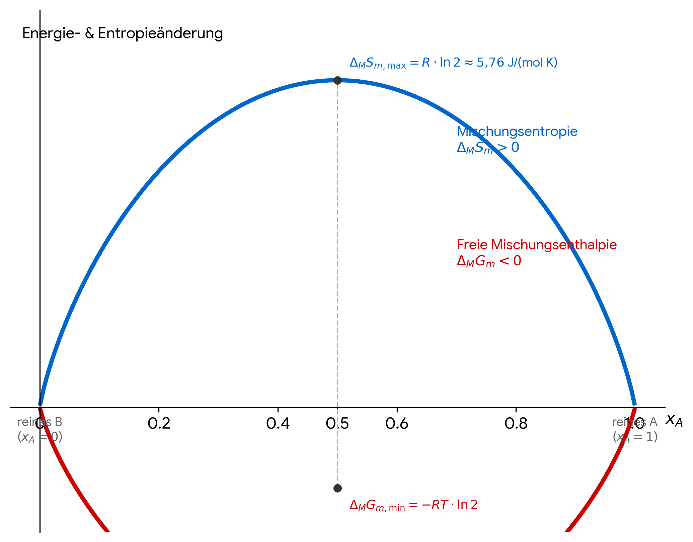
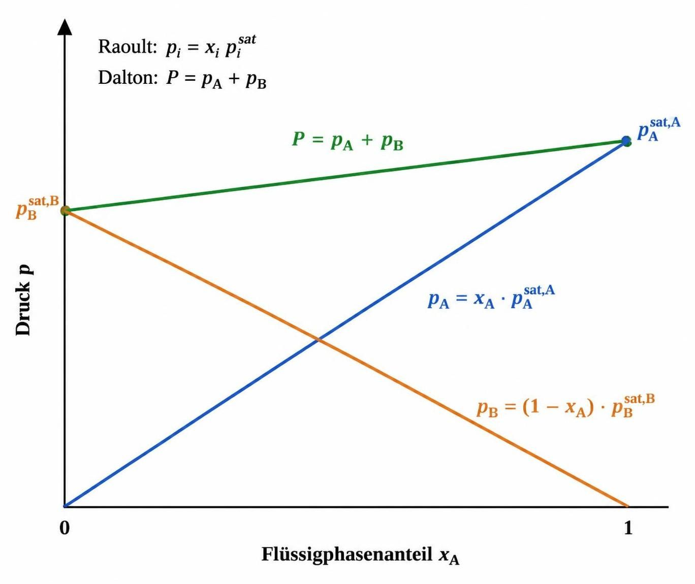
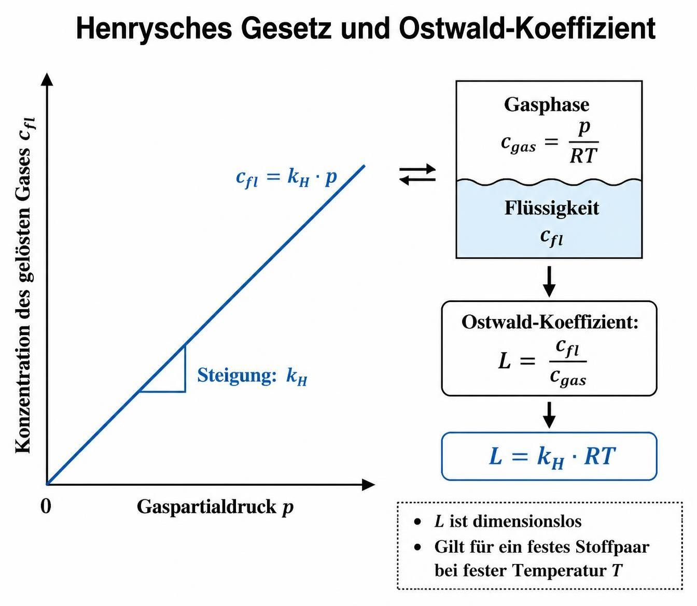

1.3 Mischungsphasen & Grenzflächen
Hier entsteht deine Formelsammlung zu idealen/realen Mischungen und Oberflächenadsorption.
Clapeyron- und Clausius-Clapeyron-Gleichung
Für das Gleichgewicht zwischen zwei Phasen gilt die Clapeyron-Gleichung:
dp/dT = ΔtrH / (T ΔtrV)Sie beschreibt die Steigung einer Phasengrenzlinie im p-T-Diagramm. Bei Einkomponentensystemen betrifft das etwa Schmelz-, Siede- und Sublimationsgleichgewichte sowie polymorphe Umwandlungen.
Für das Flüssigkeit-Dampf-Gleichgewicht kann man das molare Volumen der Flüssigkeit gegenüber dem des Dampfes vernachlässigen und den Dampf als ideales Gas behandeln. Dann erhält man die Clausius-Clapeyron-Gleichung:
d ln p/dT = ΔvH / (RT2)Bei näherungsweise temperaturunabhängiger Verdampfungsenthalpie ΔvH folgt durch Integration:
ln(p/p0) = -(ΔvH/R)(1/T - 1/T0)Umgestellt ergibt sich eine Geradengleichung:
y = m x + b
y = ln(p/p0), x = 1/T, m = -ΔvH/R
Aus der Steigung eines Diagramms von ln(p/p0) gegen 1/T lässt sich somit ΔvH bestimmen.
Für andere Phasengleichgewichte kann die Clapeyron-Gleichung näherungsweise integriert werden. Wenn ΔtrH/ΔtrV als konstant angenommen wird:
p - p0 = (ΔtrH/ΔtrV) ln(T/T0)
Diese Näherung kann beispielsweise für Schmelzgleichgewichte oder Fest-Fest-Umwandlungen verwendet werden, sofern sich ΔtrH und ΔtrV im betrachteten Temperaturbereich nur wenig ändern.
Notation: ΔtrH und ΔtrV bezeichnen die molare Enthalpie- bzw. Volumenänderung beim Phasenübergang. „tr“ steht für „transition“ (Übergang). Die Differenzen werden als Endzustand minus Anfangszustand des Übergangs gebildet. Beim Verdampfen gilt zum Beispiel: ΔvH = HDampf - HFlüssigkeit und ΔvV = VDampf - VFlüssigkeit.
Mischungsvorgänge
Für ideale Mischungen gilt:
- ideale Lösungen
- ideale Gasgemische
- ideale feste Lösungen
SAnfang = nASm,A + nBSm,B
SEnde = nA(Sm,A - R ln xA) + nB(Sm,B - R ln xB)
ΔMS = SEnde - SAnfang
ΔMS = -R(nA + nB) (xA ln xA + xB ln xB)
Allgemein:
ΔMS = -R Σi ni ln xi (ΔMSm = -R Σi xi ln xi)
Die Mischungsentropie ist positiv, wenn verschiedene Komponenten gemischt werden. Für identische Stoffe entsteht keine Mischungsentropie.
ΔMS = -R (nA ln xA + nB ln xB)
ΔMS = -nR (xA ln xA + xB ln xB)
ΔMG = -nRT (xA ln xA + xB ln xB); (ideal)
ΔMG = -nRT (xA ln aA + xB ln aB); (real)
Freie Enthalpie des Mischvorgangs zweier Gase mit unterschiedlichen Drücken. Zu der freien Mischungsenthalpie kommt noch die für die Kompression und Expansion der beiden Gase dazu.
Mischen des selben Gases zweier unterschiedlicher Drücke:
ΔMG = n1 RT ln(p1/p) + n2 RT ln(p2/p)
Entropie der idealen Mischung: Summe der reinen getrennten Gase + Mischungsentropie:
ΔMS = (nA Sm,A + nB Sm,B) + (-R (nA ln xA + nB ln xB))
ΔMS = Σ (ni Sm,i) - R Σ (ni ln xi)
ΔMSm,max = R ln 2 = 0,693 R = 5,76 J/(mol K)
... für xA = xB = 0,5
ΔMSm,min = 0; für xA = 1 oder xA = 0
ΔMSm und ΔMGm - Diagramm

für eine verdampfende Flüssigkeit + unlösliches Gas gilt:
VGas+Dampf = RT nGas / (pgesamt - pDampfdruck)
Hinter dieser Gleichung steckt das Dalton-Gesetz der Partialdrücke kombiniert mit dem Idealen Gasgesetz [1.1]. Sie beschreibt mathematisch perfekt, wie das Gesamtvolumen einer Gasphase ansteigt, wenn eine Flüssigkeit in einen Raum verdampft, in dem sich bereits ein anderes, unlösliches Gas (wie z. B. Luft über Wasser) befindet [1.1].
reguläre Mischungen:
ΔMS = ΔMSideal
ΔMH = TK ΔMSideal (ΔMHideal = 0)
ΔMH = -R TK (xA ln xA + xB ln xB)
ΔMG = ΔMH - T ΔMSideal = R (xA ln xA + xB ln xB) (TK-T)
TK : beschreibt den Übergang von einer homogenen Mischung zur spontanen Phasentrennung (Entmischung), wie man sie beispielsweise von Öl und Wasser kennt [1.1].
Integrale Mischungsenthalpie als Funktion von nA und nB:
ΔMh = -c ΔM T
(Die Messung im Labor)
Wenn man zwei Stoffe im Kalorimeter mischt, misst man die Temperaturänderung. Multipliziert mit der Wärmekapazität des Kalorimeters ergibt das die gesamte, absolute (integrale) Mischungsenthalpie der Probe.
Partiell molare Mischungsenthalpien,
Enthalpieänderung pro Mol des Stoffes i beim Mischen:
ΔMHA = (∂ΔMh / ∂nA)T,p,ni
ΔMHB = (∂ΔMh / ∂nB)T,p,ni
(Die Steigungen)
Sie beschreibt, wie viel Enthalpie sich ändert, wenn ich ein Mol der Komponente A in eine bereits bestehende Mischung hineingebe.
Berechnung der integralen Mischungsenthalpie mithilfe der partiell molaren Mischungsentahlien:
ΔMh = nA ΔMHA + nB ΔMHB
Das Euler-Theorem (Zusammensetzung)
Da Enthalpie eine extensive Eigenschaft ist (sie verdoppelt sich, wenn man die Stoffmenge verdoppelt), darf man die Gesamtenthalpie über diesen „Euler-Trick“ einfach aus den partiellen Molmengen aufaddieren.
Mittlere molare Mischungsenthalpie:
ΔMH = ΔMh / (nA+nB)
ΔMH = xA ΔMHA + xB ΔMHB
(Der Übergang zu molaren Brüchen)
Teilt man die gesamte Enthalpie durch die Gesamtstoffmenge (nA+nB), erhält man die mittlere molare Mischungsenthalpie. Das ist genau die Größe, die man später in Diagrammen gegen den Molenbruch xA aufträgt.
Geometrische Herleitung partiell molarer Enthalpien

Raoultsches und Dalton'sches Gesetz
Dampfdruck eines idealen binären Lösemittelgemischs

Henrysches Gesetz und Ostwald-Koeffizient
Löslichkeit von Gasen in Flüssigkeiten
Gas in flüssiger Phase: cfl
Gas in Gasphase: pgas
Der Ostwald-Koeffizient L
L = n R T / (pgas VLM) ; ideales Gas, Vgas=nRT/pgas
L = RT ⋅ cfl / pgas ; n/VLM=cfl
L = cfl/cgas ; RT/pgas=V/n=1/cgas
L = kH,c RT ; cfl=kH,c pgas , 1/cgas=RT/pgas
Henrysches Gesetz und Ostwald-Koeffizient

Kolligative Eigenschaften von Lösungen
Eigenschaften, die nur von der Teilchenzahl (Konzentration) des gelösten Stoffes abhängen, nicht von dessen chemischer Natur:
Π = i · c · R · T ; i: Vervielfachung der Stoffmenge bei Dissoziation
Legende:
Π = Osmotischer Druck | c = Stoffmengenkonzentration
Δp = Dampfdruckänderung | xB = Stoffmengenanteil des Gelösten
Ke / Kk = Ebullioskopische / Kryoskopische Konstante des Lösemittels
bB = Molalität des gelösten Stoffes (wichtig: Molalität, nicht Molarität!)